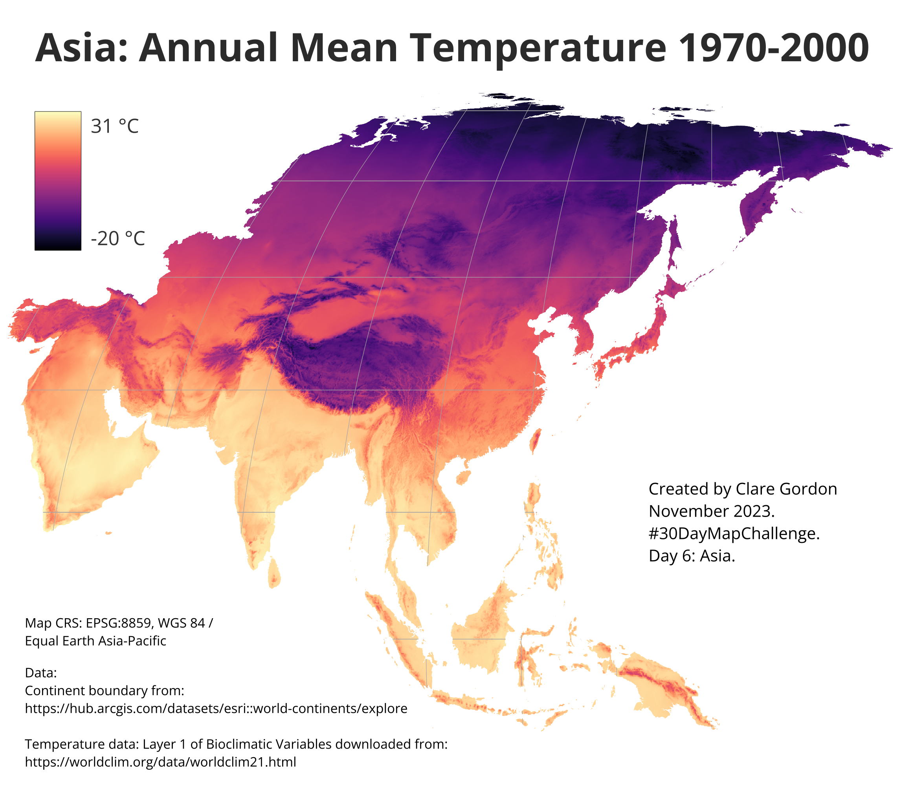

Asia
Asia Mean Annual Temperature 1970-2000

Data
Information about Bioclimatic variables
Citation: Fick, S.E. and Hijmans, R.J. 2017. WorldClim 2: new 1-km spatial resolution climate surfaces for global land areas. International Journal of Climatology. 37(12), pp.4302–4315.
Process
- Add data to map.
- Select only polygon(s) for Asia and export to new layer.
- Use
Raster > Extraction > Clip raster by mask layer, with the Asia polygon as the mask, to clip the temperature raster. Allows styling of just Asia, rather than temperatures from the whole world.
- In default CRS, layer for Asia is split, with the eastern-most part on the left of the map. Changing CRS to
EPSG:8859 - WGS84 / Equal Earth Asia-Pacific worked.
What did I learn?
- A new source of possible climate data for teaching - Worldclim
What would I like to change or do differently?
- On layout, would like to find a way to create continuous legend with intermediate points marked, e.g. on this one would have been good to at least mark zero degrees.
- Try out some other layers from Worldclim.